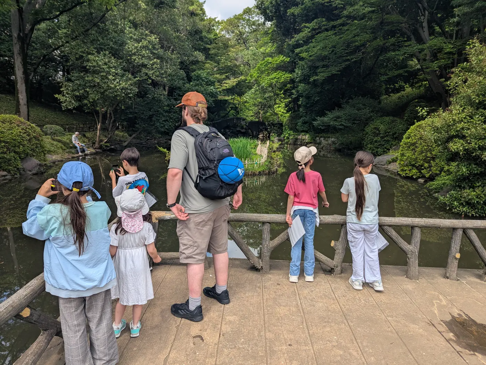

Seasonal STEM programs with hydroponics, experiments, and field trips.
Week-long daily programs during school breaks, ages 6–14.

Overview
Greentopia summer camps are week-long daily programs for children ages 6–14, running during most schools' summer break. Each week has a different theme, blending hydroponics, science experiments, cooking and nutrition, field trips, and creative projects. Camps are held at our partner facility and run from morning to afternoon, five days a week.
Weekly themes
Each week focuses on a different theme — examples include “Seed to Smoothie” for plant biology and nutrition, “Farm Engineers” for designing growing systems, “Bug Detectives” for pests, pollinators, and ecosystems, and “Future Farmers” for sustainability and food systems. Themes rotate each summer so returning campers always have something new.
Field trips
Select weeks include field trips to local parks, markets, or food-production facilities in the Tokyo area.
Registration
Registration opens in spring each year. Spaces are limited to 15 campers per week to ensure hands-on attention. You can register for individual weeks or the full summer. Early registration is recommended. See our Events page for dates and registration links.